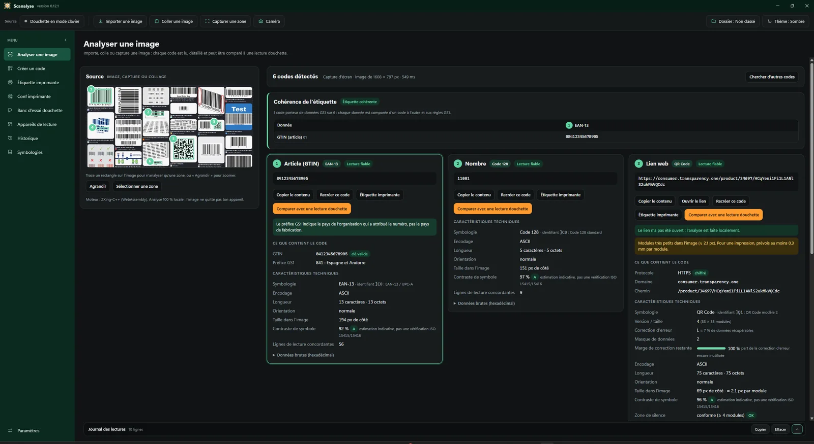
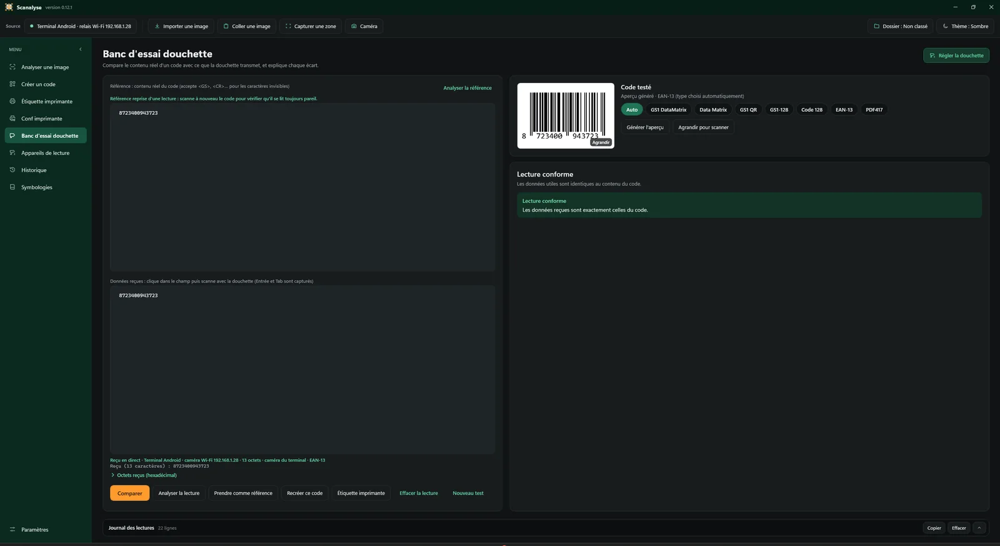
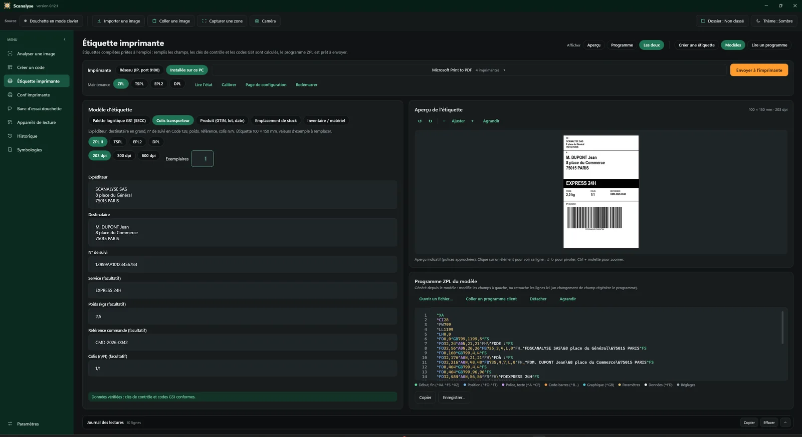
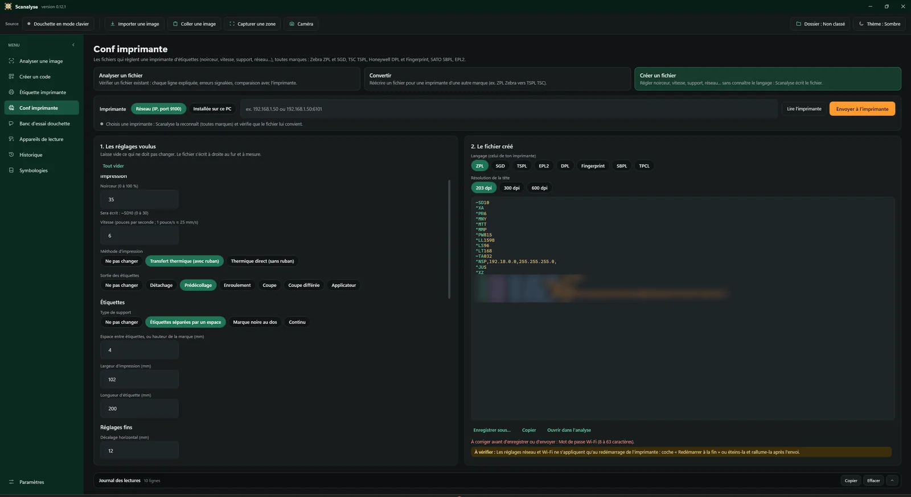
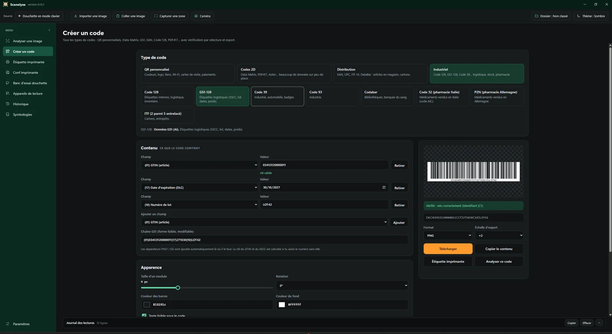
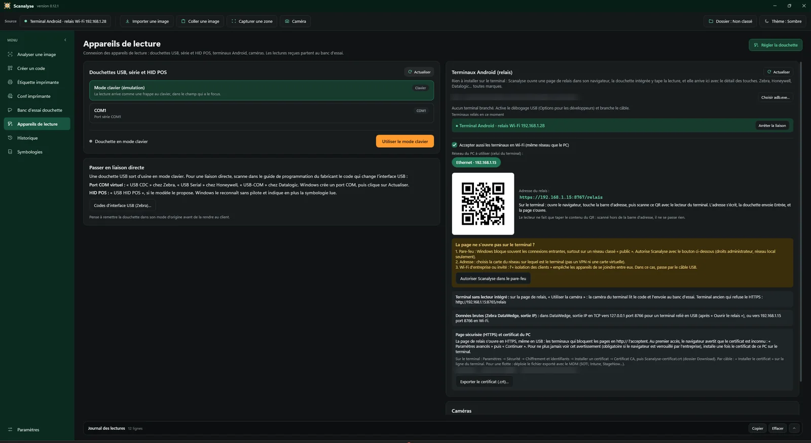
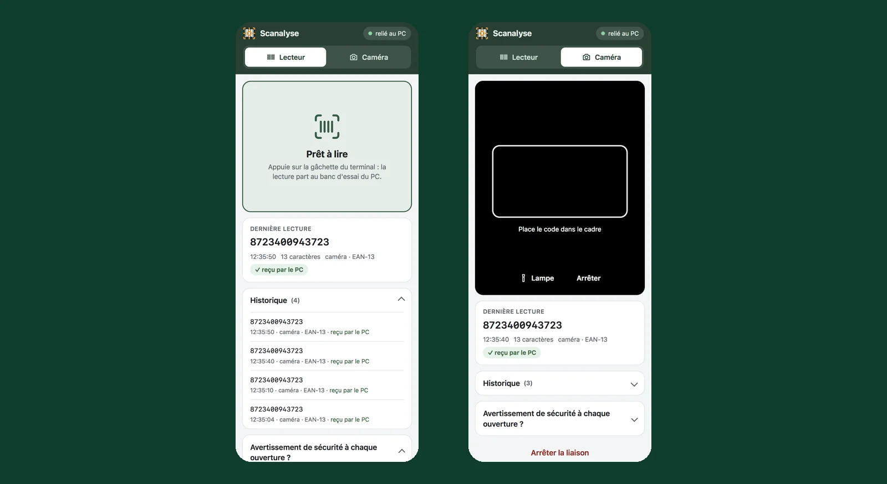

Find where it goes wrong, between the code, the scanner and the printer.
Scanalyse reads your customers' barcodes, compares what their scanner really sends and explains the programs of their label printers. Free, nothing to install, all brands.
Windows 10 and 11, a single Scanalyse.exe file, nothing to install.
Read by the customer's scanner
]d2010345312000001110LOT42GS ?17261231
- (01)
03453120000011GTIN, check digit correct- (10)
LOT42Batch number- (17)
261231Use by 31/12/2026
GS separator lost after the batch: the software reads “LOT4217261231” and no longer finds the date. Fix it in the scanner's keyboard settings.
Three calls you know by heart
“The scanner won't read.”
The code is read from a photo or a screenshot: content, check digit, contrast, quiet zone. You know at once whether the code is to blame.
“The software receives garbage.”
Scan with the customer's scanner: Scanalyse compares what it sends with the real content, byte by byte, and gives the configuration code that fixes it.
“The label prints wrong.”
The printer's program or configuration file is read line by line, with a preview of the label and every error explained.
What's inside
- Analyze an image
- Photo, screenshot or multi-page PDF: every code read, its GS1 data decoded, its defects reported.
- Create a code
- More than 25 types: custom QR, Data Matrix, GS1, EAN, Code 128, PDF417, MaxiCode. Export as an image.
- Printer label
- ZPL, TSPL, EPL2, DPL, SBPL, Fingerprint: preview, content of the codes, ready-made templates, send to the printer.
- Printer config
- Configuration files analyzed, converted from one brand to another or created from a form, Wi-Fi included. The printer is recognized on the network.
- Scanner test bench
- What the scanner sends, compared with the code: keyboard, prefix, suffix, GS1 separator. Honeywell, Datalogic and Zebra configuration codes.
- Reading devices
- USB, serial and HID POS scanners, Android terminals over USB or Wi-Fi. A phone without a scan engine reads with its camera.
- History and reports
- Analyses filed by customer case, PDF report with your letterhead, folder shared with the team.
Screenshots














All brands
Scanalyse favors no manufacturer. Among others, it recognizes:
- Zebra
- Honeywell
- Datalogic
- TSC
- SATO
- Toshiba TEC
- Intermec
- Datamax-O'Neil
- Newland
- Urovo
- CipherLab
- Point Mobile
Up and running in two minutes
- Download Scanalyse.exe and put it wherever you like, even on a USB stick.
- Run it. If Windows shows “Windows protected your PC”, choose “More info” then “Run anyway”.
- Pick the language and your folders, then follow the guided tour.
What doesn't change
Nothing leaves the PC
No image, no code read and no report is sent over the Internet. No account, no ads, no analytics.
Free and open
GPL v3 license. The code is public, every release publishes its SHA-256 hash, checked by the automatic update.
Made by a technician
Born in the field to fill a gap in the tools. A problem, or hardware to support? Open an issue.